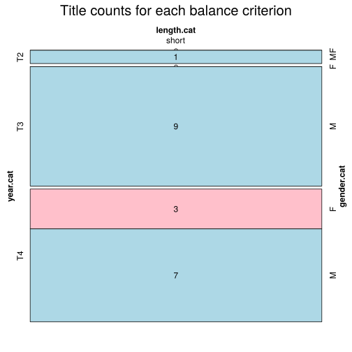

Click on a column heading to sort. Click on a text identifier to read the text (may not work in older browsers).
| Identifier | Encoding | Pages | Words | (Size) | Date (Slot) | Title | Author | Sex | Reprints |
|---|---|---|---|---|---|---|---|---|---|
| SRP18781 |
eltec-1 | 39 | 8625 | (short) | 1879 (T2) | Потурченица Лејла | Милићевић, Милан Ђ. (1831-1908) | M | low |
| SRP18801 |
eltec-1 | 58 | 12649 | (short) | 1880 (T3) | Школска икона у нашем селу | Лазаревић, Лаза К. (1851-1891) | M | high |
| SRP18810 |
eltec-1 | 80 | 10095 | (short) | 1881 (T3) | Десет пара | Милићевић, Милан Ђ. (1831-1908) | M | low |
| SRP18811 |
eltec-1 | 49 | 14145 | (short) | 1881 (T3) | Вертер | Лазаревић, Лаза К. (1851-1891) | M | high |
| SRP18821 |
eltec-1 | 80 | 10970 | (short) | 1882 (T3) | Каваљер Лаза | Ђорић, Никола В. (1859-1913) | M | low |
| SRP18822 |
eltec-1 | 41 | 15022 | (short) | 1882 (T3) | Поета и адвокат | Игњатовић, Јаков (1822-1889) | M | high |
| SRP18920 |
eltec-1 | 239 | 41500 | (short) | 1892 (T3) | Рајко од Расине | Мијатовић, Чедомиљ (1842-1932) | M | low |
| SRP18931 |
eltec-1 | 71 | 12658 | (short) | (T3) | Божићна печеница | Сремац, Стеван (1855-1906) | M | high |
| SRP18960 |
eltec-1 | 189 | 29862 | (short) | 1896 (T3) | Господа сељаци | Костић, Тадија П. (1863-1927) | M | low |
| SRP18962 |
eltec-1 | 89 | 11402 | (short) | 1896 (T3) | Конац дело краси | Ђурић, Душан (????-????) | M | low |
| SRP19020 |
eltec-1 | 231 | 37908 | (short) | 1902 (T4) | Једна угашена звезда | Комарчић, Лазар (1833-1909) | M | low |
| SRP19022 |
eltec-1 | 52 | 10109 | (short) | 1902 (T4) | Покојникова жена | Станковић, Борисав (1876-1927) | M | high |
| SRP19050 |
eltec-1 | 145 | 22848 | (short) | 1905 (T4) | Просиоци | Комарчић, Лазар (1833-1909) | M | low |
| SRP19110 |
eltec-1 | 36 | 12023 | (short) | 1911 (T4) | Потрошене речи | Ускоковић, Милутин (1884-1915) | M | low |
| SRP1918a |
eltec-1 | 40 | 7813 | (short) | 1918 (T4) | Американка | Димитријевић, Јелена (1862–1945) | F | low |
| SRP19191 |
eltec-1 | 122 | 22904 | (short) | 1919 (T4) | Брђани | Ћоровић, Светозар (1875-1919) | M | low |
| SRP1919a |
eltec-1 | 48 | 7129 | (short) | 1919 (T4) | Калуђер из Русије | Јанковић, Милица 1881-1939 | F | low |
| SRP1919b |
eltec-1 | 98 | 16515 | (short) | 1919 (T4) | Незнани јунаци | Јанковић, Милица 1881-1939 | F | low |
| SRP19202 |
eltec-1 | 100 | 20286 | (short) | 1920 (T4) | Соња | Николић, Милан М. (????-????) | M | low |
| SRP1920a |
eltec-1 | 41 | 7105 | (short) | 1920 (T4) | Пут Алије Ђерзелеза | Андрић, Иво (1892-1975) | M | high |